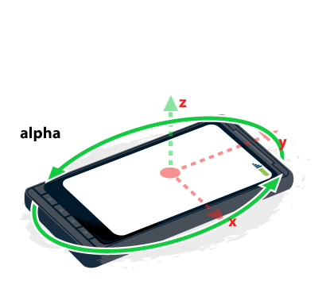
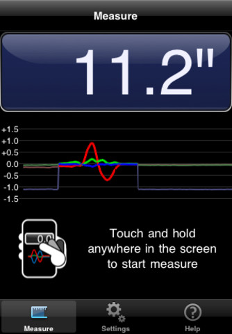

Your browser doesn't support the features required by impress.js, so you are presented with a simplified version of this presentation.
For the best experience please use the latest Chrome, Safari or Firefox browser. Upcoming version 10 of Internet Explorer should also handle it.
Device Motion
- 三个硬件
- 三种事件
图解

Device coordinate frame

twisting
alpha => Rotation around the z axis

front-back tilt
beta => Rotation around the x axis

left-right tilt
gamma => Rotation around the y axis
代码
设备姿态
window.addEventListener( 'orientationchange', function(e) {
var orientation = window.orientation
/*
* =>
* 0 正面放置
* 90 向左横置
* -90 向右横置
* */
})
三轴陀螺仪、指南针
window.addEventListener( 'deviceorientation', function(e) {
// front-back tilt [ -180, 180 ] ? [ -90, 90 ] ?
e.beta
// left-right tilt [ -90, 90 ]
e.gamma
// 水平转动，同指南针 [ 0, 360 ] 逆时针增加度数
e.alpha
// 指南针 [ 0, 360 ] 正北为 0 ，顺时针增加度数
e.webkitCompassHeading
})
加速感应器
window.addEventListener( 'devicemotion', function(e) {
var accel = e.accelerationIncludingGravity
// 向右加速度
accel.x
// 向前加速度
accel.y
// 向上加速度
accel.z
})
几条技巧
使用 touch ，而不是 click
Milliseconds Responsiveness and the Fast Tap
全屏，添加到主屏幕
<meta name="apple-mobile-web-app-capable" content="yes" />屏幕缩放或自适应
<meta name="viewport" content="
width=device-width; initial-scale=.8; " />
隐藏地址栏
window.scrollTo(0, 1)应用
doodle jump
dead raid
增强现实（Augmented Reality）
x-rat
tilt to live
» template run, boost 2
motion ruler

iHandy Level
weixin

bump
iOS redo & undo
instapaper
Demo
iCompass
Tilt Warrior
. ├── main.js ├── tilt │ ├── enemies │ │ └── dot.js │ ├── fighter.js │ ├── game.js │ ├── wall.js │ └── weapons │ ├── bomb.js │ ├── lightning.js │ └── wave.js └── wo
.
└── wo
├── class.js
├── color.js
├── entities.js
├── events.js
├── input.js
├── protos.js
├── requestAnimationFrame.js
├── stage.js
├── vector.js
└── wo.js
var Fighter = Entity.extend({
init : function(x,y,color) {
this._super(x,y)
this.color = color || '#eee'
this.radian = -Math.PI
},
// 状态更新
update : function(deltaTime) {
// todo
},
// 绘制外形：火影手里剑
draw : function(ctx) {
ctx.fillStyle = this.color
// todo
}
})
var fighter = new Fighter( 400, 400 , 'sliver' )
var dot = new Dot( 200, 200, 'red' )
dot.on( 'update', function(){
// todo: 碰撞
})
stage.add( fighter )
stage.add( dot )
stage.run()